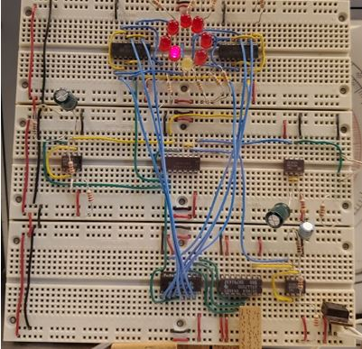
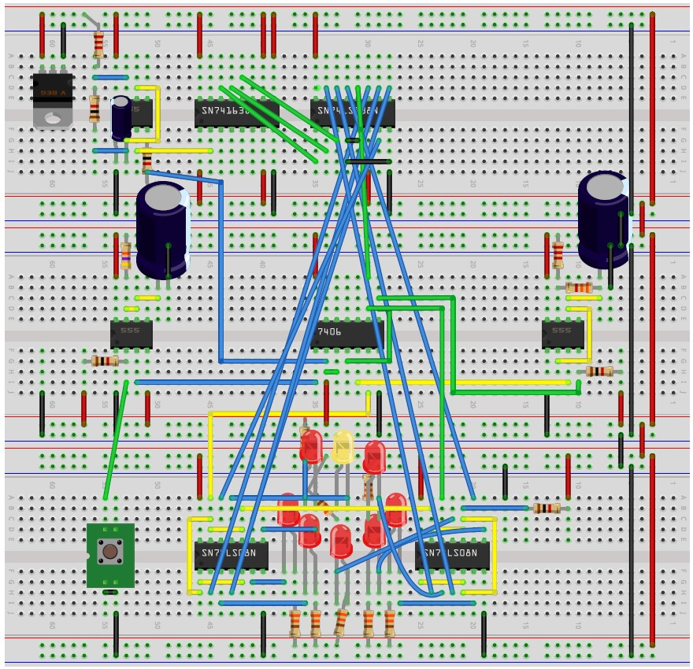
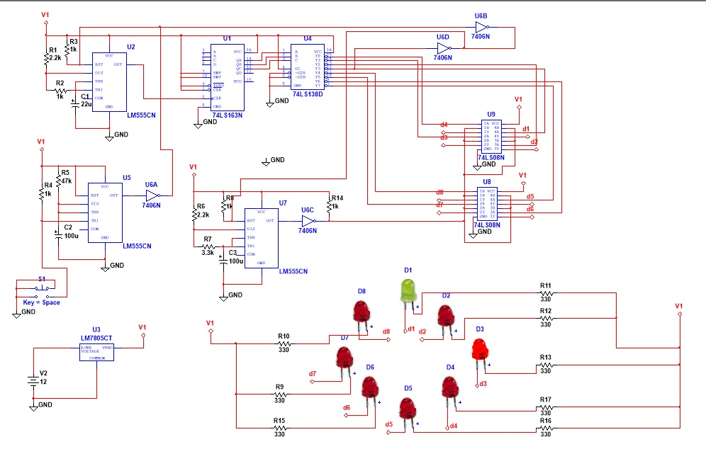
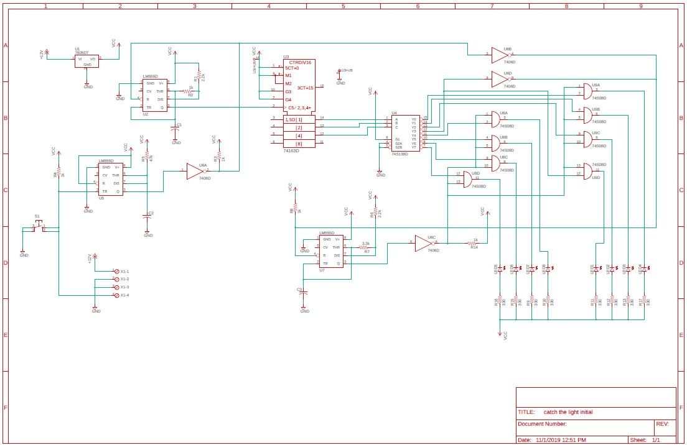
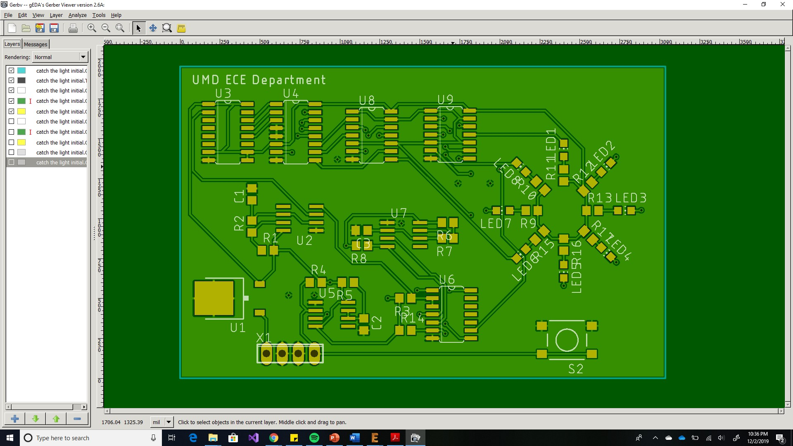
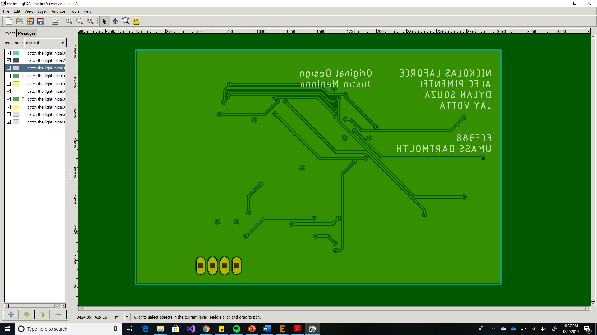
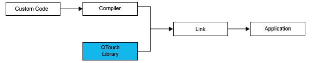
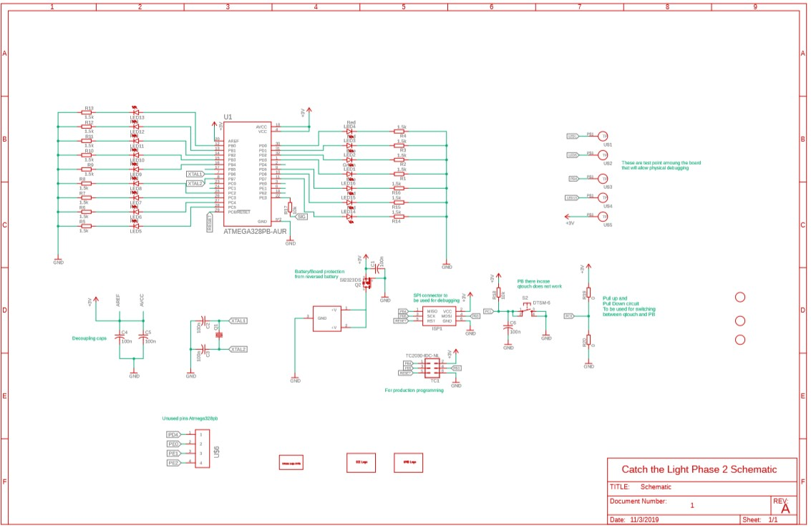
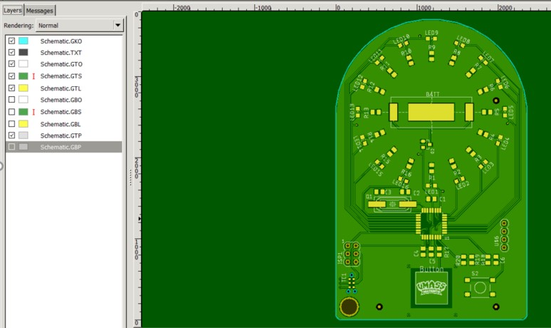
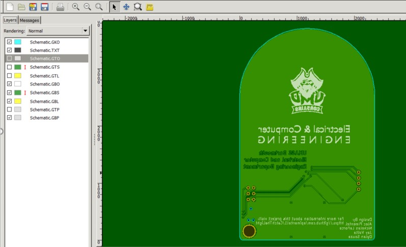

The documentation included in this wiki outlines the process taken to complete the Catch the Light PCB Project. In addition to writing about the knowledge gained from software and datasheets utilized for this project, all of the challenges that were encountered were also discussed.
Note: For all data sheets for phase 1 and 2 of the project, click here
For the first phase of the design project, the team was given the challenge of recreating the interactive “stop the light” game in the display case located in the SENG hallway made by Justin Meninno, a former ECE student at the University of Massachusetts Dartmouth. To understand the depth of the project, a list of requirements was made based upon Dr. Viall’s vision of the project. The overall vision for the project was to recreate the game on a PCB, solely using surface-mount 7400 series discrete logic components. The reason for doing so was to recreate the game with the exact same components used on the bread-boarded version of the game. In order to begin the first phase of the project, it was critical to understand the game’s circuitry and how it worked using discrete logic. To do so, three different circuit design software programs were utilized: Fritzing, Multisim, and Eagle.
Fritzing is an advanced software tool used by designers and engineers alike to transition projects and ideas into a functional prototype. The features that were specifically utilized were the schematic and digital breadboard features. The purpose of using this software was to create a breadboarded schematic of the original game. An image of what the project looked like can be seen in the image below.

What made the design of the original Catch the Light game so compelling is that it was designed with using only 7400 series discrete logic. To figure out how the circuit operated, it was crucial that a schematic was created to help reverse engineer the game and figure out how it worked, which was why Fritzing was useful. The first step to creating the Fritzing schematic was to analyze the game in the laboratory and identify the 7400 series chips that were being used on the board. A table with the name of each chip in addition to their respective amounts can be seen in Table below.
| Quantity | IC Chip Type |
|---|---|
| 1 | 5V Regulator |
| 3 | 555 |
| 1 | 74138 |
| 1 | 7406 |
| 2 | 7408 |
| 1 | 74163 |
When trying to search for these components in Fritzing’s parts library, it became apparent that Fritzing’s library wasn’t as advanced as the libraries of its competitors. To compensate for this issue, each of the chips had to be custom made using Fritzing’s “Parts editor” tool. This made the process of recreating the circuit in Fritzing much more involved than expected.
To make a custom IC, the first step that had to be done was clicking on the Core tab in the parts window and scrolling down until the ICs section came into view. Following this, The IC icon was clicked and dragged onto the breadboard window to import the part into the project. After clicking the Inspector window and clicking on the IC properties tab, the name and number of pins on the IC chip could be changed. This process was done for each chip on the board. As for the other components in the project, they were all included in Fritzing’s parts and components library, so they were added into the project normally. A table that includes the name of each component as well as their quantity can be seen in Tables below. With all the components imported into the project, the schematic was able to be made and the breadboard schematic was wired after.
| Quantity | Capacitor Value |
|---|---|
| 1 | 22uF |
| 2 | 100uF |
| Quantity | LED Color |
|---|---|
| 1 | Yellow |
| 7 | Red |
| Quantity | Resistor Value |
|---|---|
| 8 | 330Ω |
| 5 | 1kΩ |
| 2 | 2.2kΩ |
| 1 | 3.3kΩ |
| 1 | 47kΩ |
Using Fritzing was great for recreating the project on the breadboard, however it didn’t come without its challenges. The biggest problem that we had using Fritzing was with making the schematic. The wire routing on the schematic portion wasn’t very user friendly as compared to Eagle and Multisim. When placing the components onto the 3D breadboard, positioning the legs for capacitors and resistors was made abnormally difficult. Maneuvering the mouse cursor over the legs would frequently route a wire and not recognize that the leg was the component trying to be repositioned. One visual problem with the 3D breadboard involved the positioning of the LEDs. Visually, they are “sent to back” therefore at any other component also “sent to back” would get overlaid by the LED and wouldn’t be visible. With this problem, repositioning the legs of components was tedious. The finished product of the breadboard schematic can be seen below in Figure_.

Although Multisim wasn’t required to be used in this project, a schematic of the game was still created with Multisim. The reason behind doing so was to have the ability to simulate the circuit. Due to Eagle and Fritzing not having the ability to simulate the circuit to check if it was operational, Multisim was the best choice to test whether the schematics we made were correct. This ended up helping our group catch a wiring error that was made in the original schematic seeing as one of the 555 timers wasn’t wired properly. In addition, the simulation software was the main tool that was used to understand how each of the components worked together to make the game work the way that it does. The functional schematic of the project that was created on Multisim can be seen in the image below.

It was found that at startup, one of the 555 timers (U2) free runs as a multivibrator at 15Hz which in turn makes the LEDs cycle around in a circular pattern. The frequency calculation for the multi-vibrator is f=1/T=1.44/(R_A+2R_B )C=1.44/((2200+2(1000)).000022)=15.58Hz. This frequency calculation represents the speed at which the light “travels” in the circular pattern. In other words, the LED is high for 15.58 seconds and then low for 15.58 seconds.
Next, a second 555 timer (U5) operates in a monostable state which has the timer function as a one shot. Normally, this 555 timer’s output is low which allows itself to freely run while the third 555 timer (U7) is held in reset. When the button is pressed by the user, the second 555 timer’s (U5) output goes high for 5.17 seconds (t=1.1R_A C=(1.1)(47000)(.0001)=5.17seconds). When it goes high, pin 2 on the inverter (U6) goes low which stops the first 555 timer (U2) from running for 5.17 seconds. This action freezes the light at the location it was currently at when the button was pressed. If pin 12 on the 3-8 Decoder (U4) (the signal for the yellow light) goes low along with the signal received from the user’s button press, then pins 3 and 9 on the second 555 timer (U5) also go low which in turn makes their outputs high. If they are high, this will make the third 555 timer (U7) run as a multivibrator at 1.6Hz, f=1/T=1.44/(R_A+2R_B )C=1.44/((2200+2(6600)).0001)=1.63Hz. As a result, all the lights will flash at this frequency to show that the user won by stopping the light in the correct spot. If Led 1 wasn’t on when the button was pressed, then the third 555 timer (U7) wouldn’t be enabled and the light would just pause for 5.17 seconds, signaling that the user didn’t win. After the time passes, the light from the LEDs will start cycling around again waiting for the next button press.
The purpose of the synchronous 4 bit counter (U3) in the game is to turn the clock pulses from the first 555 timer (U2) into a counter that counts from 0 to 7. The 3 outputs from the counter become inputs to the 3-8 decoder (U4) and each count from the counter lights the corresponding output to feed to the LEDs. The two quadruple 2-input AND gate chips (U8 and U9) are used to light the LEDs from the decoder or from the third 555 timer (U7) when the user presses the button while the yellow LED is lit.
The easiest and most important schematic of this phase of the project was made using the EAGLE software. EAGLE stands for Easily Applicable Graphical Layout Editor, which allows users to make printed circuit boards (PCBs) based on wiring schematics designed by the user. EAGLE also allows users to manufacture their PCB designs using computer-aided manufacturing (CAM) features.
To recreate the original game on a PCB, EAGLE was required to be used. The schematic that was previously made in Multisim was made once again, but in EAGLE’s schematic designer. Before going into EAGLE’s parts library and importing the desired 7400 series discrete logic chips into the schematic, it was important to look at each chip’s respective datasheet. The reason for doing so was to understand the pin out for each chip as well as their electrical characteristics. Electrical characteristics such as supply voltage, supply current, output voltage, and temperature accuracy were important to note. The purpose of doing so was to be sure that the PCB could properly power each component on the board . All surface mount (SMD) footprints were used so that the pick and place machine could be used in the future. As for the resistors and capacitors used in the schematic, their footprints were also selected to be SMD and of size 0805 which is the standard size of components used in the industry. As per the requirements, it was specified that the PCB would operate on a 12V constant voltage supply. To do so, a voltage regulator had to be added into the EAGLE schematic. After researching different voltage regulators that were available in EAGLE’s parts library, the data sheet for the MC7800 positive voltage regulator made by ON Semiconductor was viewed. The information that was the most important to note was the regulator’s “Maximum Ratings” table on page one of the data sheet. After seeing that the input voltage range was from 5V – 18V, it was safe to say that the voltage regulator could easily handle the required 12V. The data sheet for the voltage regulator can be seen here.
The next requirement that had to be considered was that the PCB would have to have the ability to operate with a pushbutton located on the outside of the display case so that users could interact with the game. The easiest way to accomplish this was by putting an external pushbutton connector on the board. After importing the desired external connector for the PCB into the schematic, it was important to wire it in parallel so that the external pushbutton would not interfere with the button on the PCB . To accomplish this, the output voltage from the voltage regulator was connected to the input pin on the connector while the pushbutton pin was connected to the pushbutton located on the PCB. After routing all of the wires in the schematic, the electrical rule check (ERC) was ran to check for any errors or warnings in the schematic that would prevent the device from operating correctly. Once the ERC check passed, the PCB was able to be built by switching from schematic mode to board mode in EAGLE.

Due to forward and backward annotation on EAGLE, all the components were automatically imported into the board design window. In addition, any changes that were made to the schematic automatically changed in the PCB design and vice-versa. As per the requirements, the size of the board couldn’t be larger than 10 x 10 cm. This was not a hard requirement to fulfill since the size of the components on the PCB were small. One problem that was noticed after routing all the traces on the PCB was that many of the trace lengths were longer than they had to be. Long traces increase signal propagation time and may contribute to power loss and signal loss, which is not ideal when designing PCBs. In addition, longer runs are also more susceptible to interference. To fix this error, the components on the board were reorganized to shorten the distance each trace had to travel. For traces that could not be shortened so easily, using via’s proved to be the most effective solution. After the board was complete, EAGLE’s DRC check was ran to see if the board would be able to be manufacturable. After the check passed, the wiring on the board was compared to the schematic while also making sure that the layout of the PCB was visually appealing. Once the team felt comfortable with the design, the Gerber files were made as seen below.


After generating the Gerber files in Eagle, one issue that was originally noticed was that the silkscreen text in the rendered image of the board was quite small. After clicking on the properties for the silkscreen text, it was found that the text would have to be increased in size to be manufacturable by the board house. After this error was fixed, the board was ready to be manufactured. Due to the Phase 2 board being the main focus of this project, the PCB for phase 1 was not manufactured, however it will be able to be manufactured whenever needed since the Gerber files were assembled correctly.
For Phase 2 of the project, our group was tasked with creating a more advanced version of the game that operated using the Atmega328PB microcontroller. The requirements for Phase 2 also specified that a capacitive touch button incorporated into the PCB design was to be used in the place of a regular pushbutton. In addition, the game would have to operate off a single coin cell battery that could automatically power off the game after 30 seconds of no user activity. Before making a schematic in EAGLE to make a prototype of the PCB, it was important to read the datasheet for the Atmega328PB.
Although all the members in the group have previously used the Atmega328PB and have had experience using the datasheet, no one had ever interfaced a capacitive touch button with the chip. On page 306 of the datasheet, information pertaining to the peripheral touch controller (PTC) was able to be found. The first piece of critical information found was an explanation of how capacitive touch buttons work. It was learned that when the user’s finger makes contact with the PTC, the user’s finger acts as a virtual ground. When a connection between the user’s finger and capacitive touch button is made, a change in the dielectric is registered which signals that the button is being pressed. It was also noted that to increase performance of the button, a resistor in series ranging from 1kΩ to 1MΩ could be used. This was an important fact that played a role into the design of the PCB so that the board would respond to the user’s touch in less than 0.1 seconds, which was one of the requirements for the project. The second most critical piece of information obtained was that Atmel Start Q-Touch library had to be used in conjunction with the compiler when writing code for it.

To be sure that a 3V coin cell battery would have enough voltage to power the game, the power consumption of the Atmega328PB had to be considered. With the Atmega328PB operating at 1.8V - 5.5V, it was understood that the chip would operate fine on 3V. In addition to the Atmega chip, it was also important to test the forward voltage and nominal current of the 16 LEDs in the design. During the test, a red LED was used seeing as the blue and green LEDs had not yet arrived via mail. Upon testing the LED with a series resistance of 1.5kΩ, it was found that the forward voltage was 1.74V and the nominal current was 819.4mA. To make the LEDs as bright as possible, two different scenarios were tested. The first being the full 3V of the battery powering the LEDs and the second being 1.8V powering the LEDs. By testing the performance of the LEDs at 1.8V, the results observed would demonstrate what to expect with a dying battery. After conducting the test, it was found that exactly at 1.7V, the red LED’s shut off. This was not much of a problem considering that the Atmega328PB chip would also stop working at 1.8V. Since it was found that the LEDs didn’t consume much current it was confirmed that a 3V coin cell battery could power the PCB efficiently.
In the case that the user put the battery in backwards, it was important to include a feature that would protect the PCB from shorting out. The solution to this problem was using an PFET seeing as it had less of a power loss than if a diode was used instead. This theory was tested, and it was found that a died would have a voltage drop of 0.7V whereas the PFET was approximately 0.1V. After understanding the power consumption of the components that would be on the PCB, a schematic of the circuitry for the PCB was made in EAGLE which can be seen below.

After finishing the schematic and passing EAGLE’s ERC test to check for any wiring errors in the schematic, the PCB was able to be constructed. As per the recommendation of Dr. Viall, the bottom of the board was rectangular while the top of the board was rounded in the shape of a semicircle. The size of the board remained under the 10 x 10cm limit stated in the phase 2 requirements document, however the design offered a better aesthetic to the game. In addition to the shape of the board, Dr. Viall also recommended a great way to lay out the components on the PCB. This idea consisted of the battery holder being placed in the middle of the circular pattern of LEDs and resistors while also aligning the Atmega328PB and the capacitive touch button with the center of the board. Unlike phase 1, phase 2 featured 16 LEDs in three different colors that made up the circular pattern. The design featured 13 red, 2 blue, and 1 green LED. By having the components on the PCB in this manner, it was easy to fit the rest of the components that were needed on the board as well.
In addition to the components present on the board, the requirements document also specified that three different graphics had to be silkscreened on the board. The three graphics were the name of the university (UMASS Dartmouth), Arnie the Corsair (UMASS mascot), and lastly the ECE department. The names of the ECE students in the group that helped build this project was also included on the back of the PCB, in addition to the link for the group’s GitHub. An image of the PCB’s layout can be seen below.
An important element that was thought of in the PCB design was the orientation of the resistors. Since the coin cell battery had to be slid under the battery holder to power the game, it was vital to entertain the possibility of the battery contacting the top resistors as well as the battery holder at the same time. To prevent the possibility of a short circuit, the resistors connecting to the LED were orientated so that the side of the resistor connected to ground was facing the battery holder. By doing so, the ground side of the battery would come in contact with the side of the resistor that was grounded, therefore no harm to the circuit would be done.
While reviewing the PCB before finalizing the Gerber files for manufacturing, there were some minor changes that were made to the design. The first of which was increasing the size of the test points on the board. The test points had to be increased to 50 mil so that enough copper could be exposed to allow a test lead to be placed on it for troubleshooting. Another revision made to the board was being sure to label all pins, connectors, and components on the board properly. Above the battery holder “CR2032” was added to the silkscreen layer to specify what type of battery the game operated on. In addition, the names of all connectors on the board were clearly labeled to avoid confusion. The most vital revision made to the board was increasing the text size of the silkscreen. After looking at the properties of the silkscreen text, it was found that the text was too small to be manufactured by the board house. To correct this issue, the text was reformatted to be of size 8mil thick and 60 mil tall. One addition that was made to the board was making a large hole in the bottom left corner to the PCB to allow users to attach the board to a keyring if they decide to do so. Images of the Gerber files for the front and back of the finalized PCB design can be seen below.


After the Gerber files for the project were submitted, a bill of materials (B.O.M) had to be made to order all of the components needed on the PCB. Seeing as the board was going to be reproduced by UMASS Dartmouth and handed out as an orientation gift, one of the requirements that were made was that the price of all the material had to be under $3.00 per unit of 100. In a real-world application, it is common practice to make a B.O.M for multiple different unit quantities such as units of 100, 500, and 1000. Due to the nature of the project, only the price in quantities of 100 was entertained. The constructed bill of materials for the project can be seen here.
All of the components for the project were bought from the company Digikey who are authorized distributors of electronic components. Every component except for the 2032 batteries and pin headers were bought in cut-tape packaging. Cut tape allows customers to buy whatever quantity they want of one component without having to spend much more buying a reel of the desired component. For this reason, all of the cut tape packages for the components on the board were ordered in units of 100. After speaking with Dr. Viall, it was agreed that a good way to spend less money was to remove the 3.6864MHz crystal from the B.O.M and use the 8MHz RC oscillator built into the Atmega328PB chip instead. In addition to this, the ECE department already had reels of components that were needed for the project so there was no need to order more. As a result, the B.O.M was successfully reduced to below $3.00 per board just as the requirements specified.
The coding aspect of the project present to most trouble. With having to use a capacitive touch button, the code intensity increased a fair amount. Along with the cap touch, setting the Atmega to go into a sleep mode or state was a new feature that we have never used. This proved to be the most difficult. Apart from the sleep mode and the cap touch, the board was first built around using a tactile push button. This helped with prototyping the main code for the game seeing as programming a tactile push button is less complicated.
The main code for the game consists of cycling the lights in a clock-wise or counter-clock-wise direction. Based on the design of the board, the code had to be structed around the LED configuration. Originally in the board’s initial design, LEDs 1-8 were going to be connected to port D pins 0-7 and have the remaining LEDs, 9-16, connected to port B 0-7. This would have allowed for simpler code to be written as all that would need to be done is to increment a number from 0 to 7 on port D to cycle lights 1-8. Once that variable hit 7, it was reset and the same was done on port B. This cycle would continue repeatedly. Once it came time to design the PCB, it was found that it would prove difficult to route all the traces. This idea was then scraped for the current design.
The current design took a different approach than that of the initial. The way in which the LEDs were configured to the ports was based on the orientation of the Atmega. There were a few components that required the Atmega to be configured with pin 1 in the upper right corner. This arrangement allowed for the shortest trace for the cap touch. With the chip configured in the perfect arrangement, it then had to be decided how the LEDs would be configured. The LEDs were connected as seen in the Table pictured below. By making this change, an alternate approach had to be taken in code. Knowing the pins that each LED was connected to led to an array being created with all the values in the order that they occurred. For example, element 0 had the pin number 3 for LED 1. Like the initial design, a variable named Flashreg was incremented from 0 to 15 or decremented from 15 to 0 and used as the index into this array. Based on the value of the Flashreg, either ports D, C, or B were selected. As a result, values of 0-3 and 13-15 corresponded to port D, 4-7 corresponded to port C, and 8-12 corresponded to port B. As mentioned, the LEDs cycle both clockwise and counter-clockwise. To accomplish this, the variable Flashreg was incremented from 0-15 for the LEDs to flash in a counter-clock-wise pattern. Once Flashreg reached 15 it was then & with 15 to reset it back to 0. Similarly for the clock-wise pattern, Flashreg was decremented from 15-0 . Once Flashreg reached 0 it was then reset to 15. By doing this, it allowed for the LEDs to be continuously cycled in either direction.
After figuring out how to cycle the lights, it was time to implement the tactile push button into the code. To accomplish this, a pin change interrupt was utilized. This means that every time the button was pressed, the program would stop and jump to an interrupt vector and do whatever was in it. Once that code inside the interrupt vector was complete the program would resume right where it stopped. This allowed for better light catching accuracy. Once inside the interrupt vector, it is here where it is decided if you successfully caught the light or not. As the value Flashreg corresponded to the LED that was on, it was used to decide if you caught the light. If the value of Flashreg was 0, LED 1, then you won and the direction of the lights would changed. If Flashreg was not 0 then you lost and the led would continue to cycle. Now if you won a second time, the leds would change direction again as well as speed up. The this would continue to happen until you won a total of 6 times in a row or if you lost then the game would reset to the original speed.
| Led | Port | Pin number | Element number |
|---|---|---|---|
| 1 | D | 3 | 0 |
| 2 | D | 2 | 1 |
| 3 | D | 1 | 2 |
| 4 | D | 0 | 3 |
| 5 | C | 5 | 4 |
| 6 | C | 4 | 5 |
| 7 | C | 3 | 6 |
| 8 | C | 2 | 7 |
| 9 | B | 4 | 8 |
| 10 | B | 3 | 9 |
| 11 | B | 2 | 10 |
| 12 | B | 1 | 11 |
| 13 | B | 0 | 12 |
| 14 | D | 7 | 13 |
| 15 | D | 6 | 14 |
| 16 | D | 5 | 15 |
When the phase 2 PCB and the needed components arrived, it was time to populate the PCB. To do so, all surface mount components were placed with the NeoDen pick and place machine. For the machine to be able to recognize the locations of each of the components on the board, it was important to have fiducial markers on the PCB. The x and y axis values for the location of each fiducial marker were specified in the pick and place machine’s software so that the machine knew where the center of each component location was. After transferring the CSV file from EAGLE to the pick and place machine, all of the feeders for the components had to be set in addition to their respective pick heights, place heights, feed rate, and peel strength. Although much of these values were preset by Dr. Viall, knowledge was gained on how to measure the pick and place height of larger components on the board. A primary example of a component that required this was the battery holder. The battery holders were placed on a wooden tray made using the laser cutter machine in lab. A tray had to be made so that the pick and place machine could pick up the holders since the battery holders were packaged in a bag. The tray was placed inside of the pick and place machine and mouse vectors were used to hover the nozzles above the battery holder. Nozzle 4 (which is meant for large parts) was lowered down to the tray until an audible click was heard signifying that the nozzle picked up the component. The value displayed on the computer monitor was then recorded as the pick height for the component. The battery holder was then lowered into its location of the PCB until an audible click was heard. Once again, the value displayed on the monitor was recorded and set as the place height for the component. Understanding how to do this was important for all of the components that were being used so that they could be placed correctly.
After the needed components were placed on the PCB, it was critical to check if the game operated as it was designed. Using a programmer, the code written was uploaded to the Atmega328PB on the PCB. Seeing as code for the capacitive touch button was yet to be written, the board operated using a pushbutton that was soldered onto the board. The group was pleased to see that the board operated as designed which meant that there were no routing errors that were made on the board.
To test the battery life of the game, the current consumption from the game’s operation was tested. The table below is the data recorded for the current consumption of LED’s as well as the two different states of operation.
| Quantity | LED | Current Drawn |
|---|---|---|
| 1 | Green LED ON | 1.67mA |
| 1 | Blue LED ON | 1.74mA |
| 1 | Red LED ON | 2.1mA |
| 16 | All LEDs ON | 17.56mA |
| 0 | All LEDs OFF | 1mA |
The data gathered in the Table above showed that a single blue LED and a single green LED drew much more current than a single red LED. This revealed that the different colored LEDs reduced the battery life, whereas using all red LEDs would have helped to use less power. To simulate a dying battery, two wires were soldered onto the battery holder and attached to a power supply. While the LEDs flashed around in a circle, the voltage on the power supply was slowly reduced. At 2.4V, the blue LEDs stopped functioning, and the green LED followed thereafter at 2.3V. The red LEDs remained operational at 2V. These results were troubling seeing as only 25% of the battery’s life could be used until the LEDs on the game went out, making the game not function as designed.
To see how long the battery life would last, the data sheet for the Sony CR2032 battery was referenced. The datasheet revealed that the battery could operate for 220mAh at a current draw of .2mA. However, this couldn’t be taken at face value seeing as the PCB draws more current. To test the life of the battery up to 2V, the battery was connected to a Rigol DC electronic load. The machine was set to 17.56mA to see how long it would take the battery to drain to 2V if all LEDs were on. The result would then be a safe estimate as to how long the game would operate for if someone were to constantly win. It was found that the battery dropped to 2V after 1 hour and 54 minutes of a constant current draw of 17.56mA. Seeing as the average current drawn from playing the game is 6mA, it was safe to say that in the game’s current state it would operate for close to 6 hours of constant use.
To be sure that the project was working accordingly an Engineering Test Plan was made. In the document, each requirement had a requirement identification number. Each test fell into one of five categories: Hardware, Mechanical, Aesthetic, Software, and cost. Based on what category the requirement fell into, a specific engineering test was developed for it. As the group progressed with the project, it was important to keep conducting the tests in the document to be sure that the project was still operating as designed. For the creative/additional features that were added into the game and beyond the scope of the requirements, an additional Engineering Test Plan document was made. These tests were mostly for software seeing as they made sure that the features in the game still worked as originally designed.
Before reviewing the project with Dr. Viall, an Acceptance Test Plan had to be made. This plan is a document that verifies that the requirements requested by the customer have been met. To prove this, the Acceptance Test plan outlines a test procedure thast proves measurable requirements.
For this project, many of the requirements specified by Dr. Viall were completed to the highest standard. Although the PCB from Phase 1 was not manufactured, our group performed all of the necessary work and research to replicate the design created by Justin Meninno. All Gerber files were successfully constructed and all properties on the board were verified to be manufacturable.
Phase 2 was the most entertaining, yet challenging part of this project. The PCB for the handheld "Catch the Light" game succeeded our expectations and we were thrilled with the outcome. This was due to the careful planning taken to assure that there were'nt any fatal flaws in the design of the PCB. By implementing both a tactile pushbutton as well as a capacitive button, the game was versataille in the way that it was able to be played. The creative idea of implementing multiple levels to the game was successfully completed in the game's code which added to it's charm. In addition to the different levels of speed, after every win the LEDs travel in the opposite direction.
One part of the project that would have been changed is the way the capacitive touch button was made. By making the whole board a ground plane, it is believed that the capacitive touch button on the board doesn't work as efficiently as it could. Although it fulfills the requirement of responding to the user's press in under .1 seconds, it can be seen that the button is quite sensitive. Despite messing around with the Q-Touch Library's features, the capacitive touchbutton's sensitivity wasn't completely fixed.
Another idea that we wish we could have implemented is the Extreme Speed Mode. After trying to fix an error in the code, we stumbled upon an implementation of the game where if the user lands on the green light successfully then the game didn't pause. Instead, the game continued immediately, forcing the user to keep focus. If more time was available, it would have been fun to implement a secondary mode in the code where the user had to catch the light without letting the light pass the green LED once. This would have made the game fast paced and immensely hard.
One part of the project that couldn't be completed was getting the game to go into sleep mode. The reason why this was hard to accomplish was because of the minimal documentation available on the subject. Since we have never dealt with sleep mode on the Atmega328PB before, we relied on Atmel's documentation as well as examples that could be found on the internet. Unfortunately, nothing that was found could successfully be applied to our project.